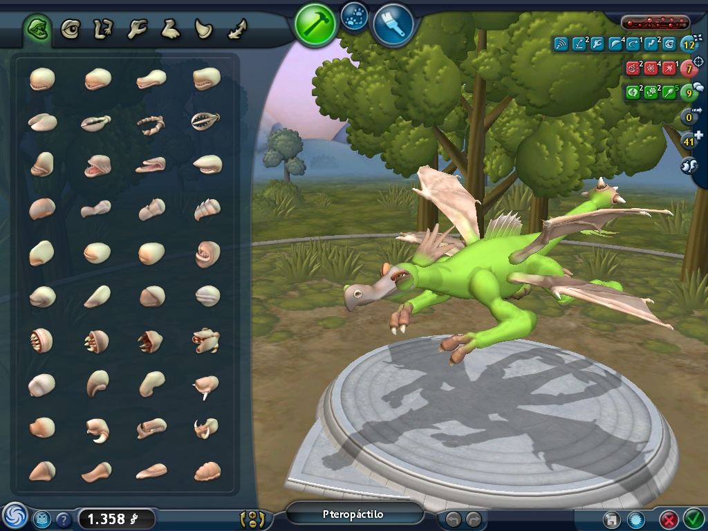
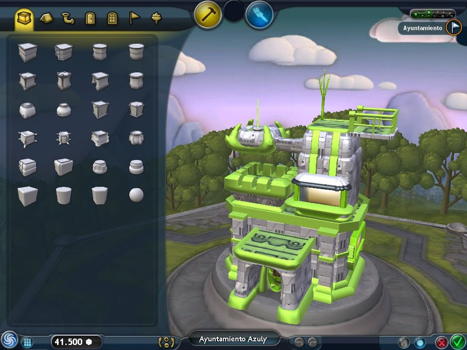
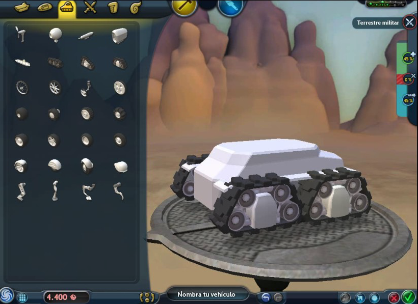
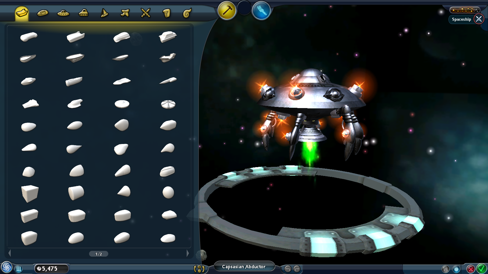

Spore és un videojoc de simulació de vida i d'estratègia per Microsoft Windows i Mac que simula l'evolució d'una espècie des de les etapes més primitives fins a la colonització de la galàxia.

El videojoc compta amb l'element de què tu pots fer la teva criatura com vulguis, pots fer que sigui agressiva, neutral o pacífic, depenent de la ruta que agafis tindràs una part o d'altres per fer la teva criatura.
  Un cop arribes a l'etapa de civilització comences a crear edificis començant per l'ajuntament. També fas cases, llocs d'oci i oficines. Una ica més endavant fas vehicles, com avions, vaixells,cotxes de guerra i la teva propia nau espacial.
ETAPES
- Cèl·lula
- Bestia
- Tribal
- Civilització
- Espai
RANKING D'ETAPES
- Bestia
- Tribal
- Civilització
- Cèl·lula
- Espai